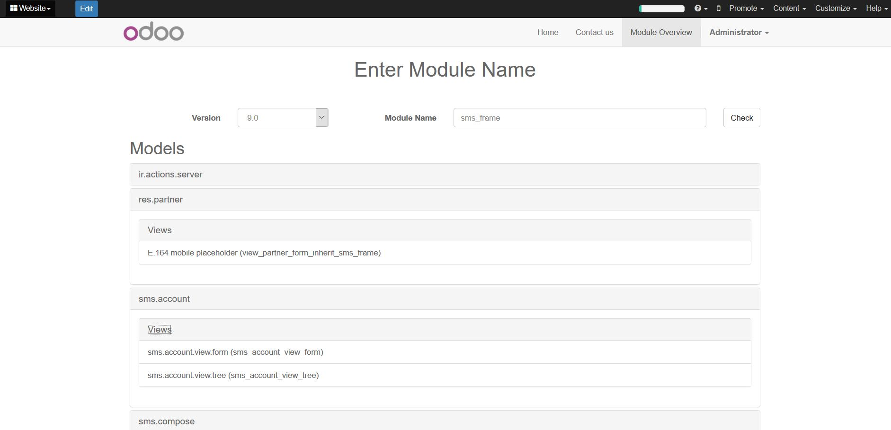

Gives an overview of what a module does / has in it
Gives you a overview of the following
1. Models(with views)
2. Views(xml)
3. Menus(menuitem tag)
4. Access Rules (by group and by model)
Unfinished Features
1. Models without views
2. Views imported through csv
3. Menus imported through csv of menu model
4. Fields
5. Functions and there docstrings
6. Controllers
7. New groups
Straightforward Documentation

Get insight into what a module has in it without having to crawl through code.
Instructions
1. Upload module zip to /module/overview and hit 'Check'
2. View a chached copy of the overview using '/module/overview?module=module_name'
Find a bug? feature idea? send an email to steven@sythiltech.com.au